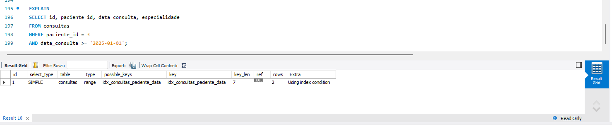
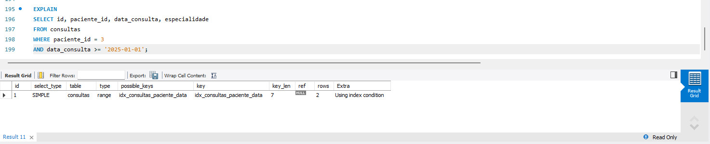

Laboratório MySQL lab_23092006
Modelagem relacional, objeto de banco de dados (procedure com cursor) e otimização de consultas via índice composto, aplicados a um domínio de prontuário clínico simplificado.
Schema e modelagem
O schema lab_23092006 concentra quatro tabelas relacionadas por chave estrangeira: pacientes, consultas, prontuários e uma tabela de auditoria de apoio.
CREATE DATABASE lab_23092006
CHARACTER SET utf8mb4
COLLATE utf8mb4_general_ci;
USE lab_23092006;Estrutura das tabelas
- id PK · AUTO_INCREMENT
- nome VARCHAR(120)
- cpf CHAR(11) · UNIQUE
- data_nasc DATE
- id PK
- paciente_id FK → pacientes.id
- data_consulta DATE
- especialidade VARCHAR(80)
- id PK
- consulta_id FK → consultas.id
- observacao TEXT
- id PK
- tabela VARCHAR(60)
- operacao VARCHAR(20)
- registro_id INT
- usuario VARCHAR(80)
- criado_em DATETIME
Chaves estrangeiras
ALTER TABLE consultas
ADD CONSTRAINT fk_consultas_paciente
FOREIGN KEY (paciente_id) REFERENCES pacientes(id)
ON DELETE CASCADE ON UPDATE CASCADE;
ALTER TABLE prontuarios
ADD CONSTRAINT fk_prontuarios_consulta
FOREIGN KEY (consulta_id) REFERENCES consultas(id)
ON DELETE CASCADE ON UPDATE CASCADE;Massa de dados: 5 pacientes cadastrados e 10 consultas distribuídas entre 2024 e 2025, com prontuário correspondente para cada consulta.
sp_contar_consultas_2025
Procedure que percorre, via CURSOR, as consultas de um paciente no ano de 2025 e retorna a contagem. Valida a existência do paciente_id antes de processar; se inválido, dispara erro customizado com SIGNAL SQLSTATE '45000'.
DELIMITER $$
CREATE PROCEDURE sp_contar_consultas_2025 (
IN p_paciente_id INT,
OUT p_total INT
)
BEGIN
DECLARE v_existe INT DEFAULT 0;
DECLARE v_consulta_id INT;
DECLARE v_data DATE;
DECLARE v_fim BOOLEAN DEFAULT FALSE;
DECLARE v_contador INT DEFAULT 0;
DECLARE cur_consultas CURSOR FOR
SELECT id, data_consulta
FROM consultas
WHERE paciente_id = p_paciente_id
AND YEAR(data_consulta) = 2025;
DECLARE CONTINUE HANDLER FOR NOT FOUND SET v_fim = TRUE;
SELECT COUNT(*) INTO v_existe
FROM pacientes WHERE id = p_paciente_id;
IF v_existe = 0 THEN
SIGNAL SQLSTATE '45000'
SET MESSAGE_TEXT = 'Erro: paciente_id informado não existe.';
END IF;
OPEN cur_consultas;
loop_consultas: LOOP
FETCH cur_consultas INTO v_consulta_id, v_data;
IF v_fim THEN LEAVE loop_consultas; END IF;
SET v_contador = v_contador + 1;
END LOOP;
CLOSE cur_consultas;
SET p_total = v_contador;
END$$
DELIMITER ;Testes executados
CALL sp_contar_consultas_2025(1, @total1);
SELECT @total1; -- 2 consultas em 2025
CALL sp_contar_consultas_2025(4, @total2);
SELECT @total2; -- 1 consulta em 2025
CALL sp_contar_consultas_2025(999, @total3);
-- Error Code: 1644
-- Erro: paciente_id informado não existe.Índice composto + EXPLAIN
Query alvo, filtrando por paciente_id e data_consulta:
SELECT id, paciente_id, data_consulta, especialidade
FROM consultas
WHERE paciente_id = 3
AND data_consulta >= '2025-01-01';Índice criado
CREATE INDEX idx_consultas_paciente_data
ON consultas (paciente_id, data_consulta);Capturas de execução
Espaços reservados para os prints reais de execução — substituir os arquivos em assets/ pelas capturas do ambiente MySQL utilizado.



Reflexão técnica
O EXPLAIN mostra ao otimizador quantas linhas o MySQL precisa varrer para responder a uma consulta. Sem índice, a busca por paciente_id e data_consulta exige varredura completa da tabela (type ALL). Com o índice composto (paciente_id, data_consulta), o otimizador passa a usar a árvore B-Tree do índice para localizar diretamente o intervalo relevante, reduzindo o número de linhas examinadas e mudando o plano de execução para ref ou range. A ordem das colunas no índice importa: como as buscas filtram primeiro por paciente e depois por data, essa é a ordem que maximiza o aproveitamento do índice.